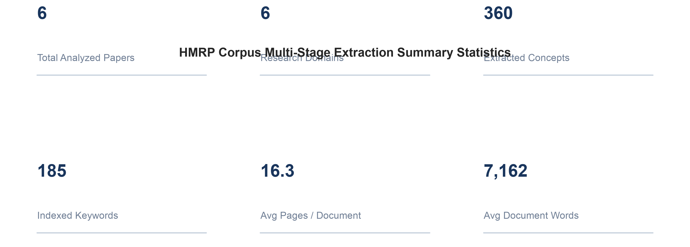
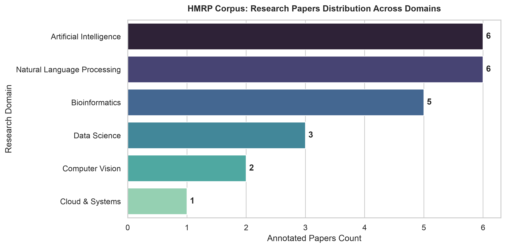
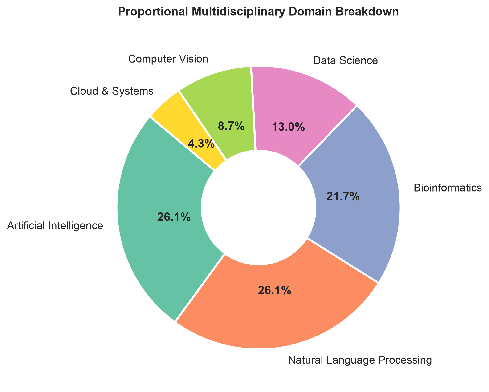
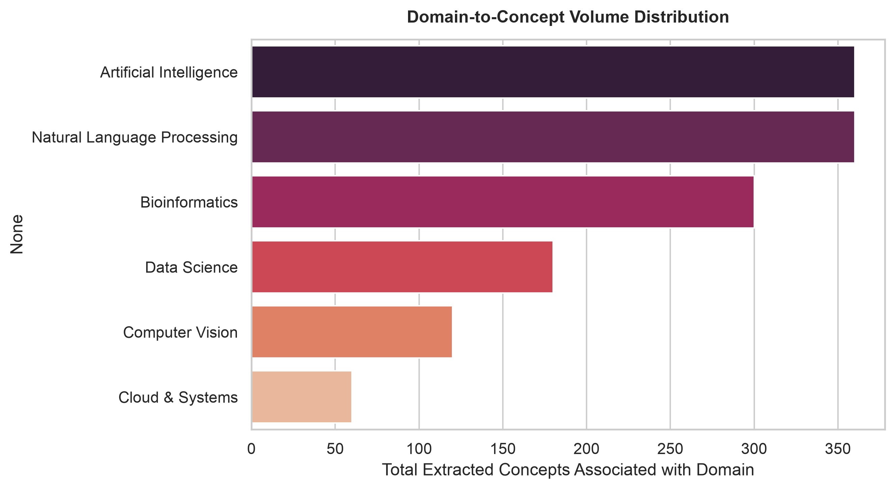
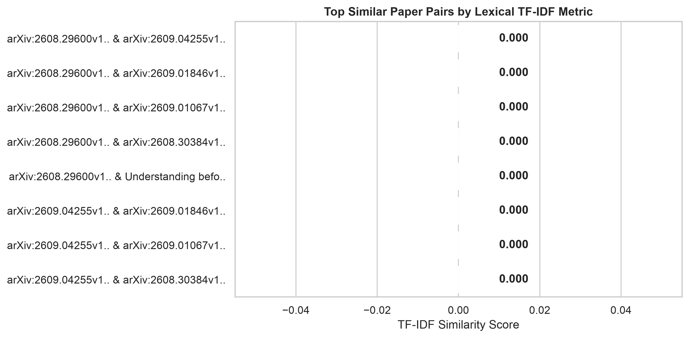
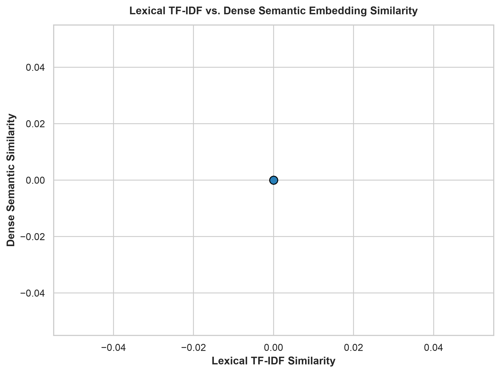
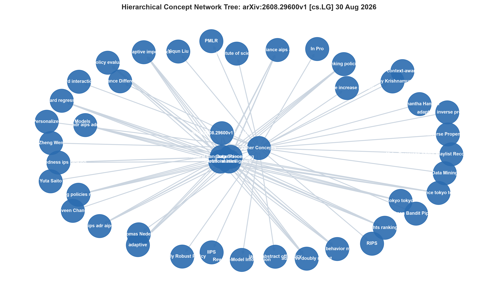
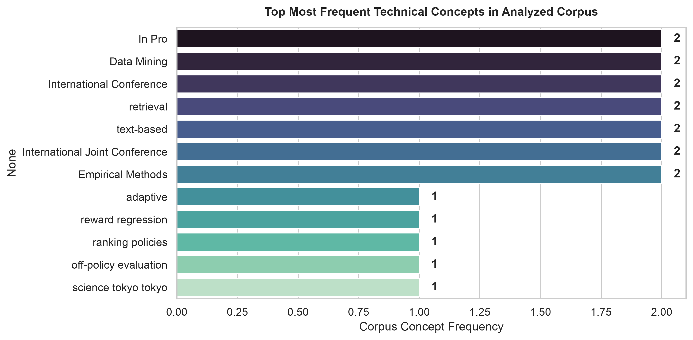
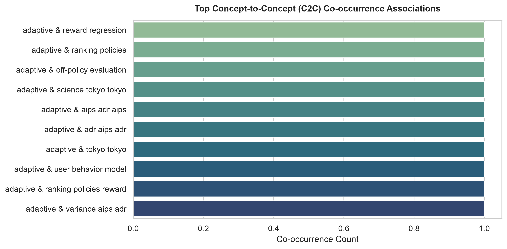
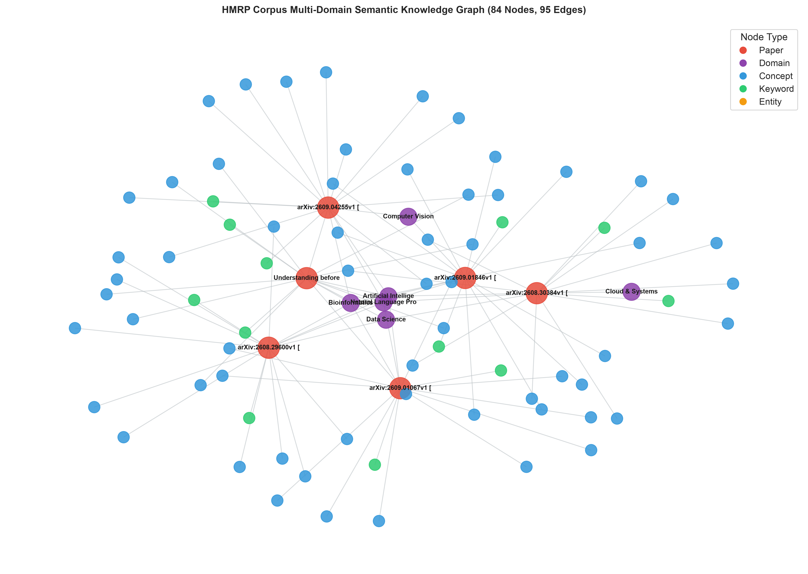

🔬 HMRP: Comprehensive Multidisciplinary Research Report
Evaluation, Semantic Taxonomy Visualizations, Concept Bridges & Cross-Domain Similarity Analysis
1. Project Overview & Methodology
The Hierarchical Multidisciplinary Research Platform (HMRP) systematically analyzes research publications across diverse scientific domains. The pipeline leverages multi-engine NLP extraction (KeyBERT, YAKE, TF-IDF, spaCy) to construct hierarchical concept taxonomies, computes hybrid inter-paper similarity matrices, and maps Concept-to-Concept (CCC) cross-domain bridges.
2. Dataset Statistics & Corpus Overview

Corpus Ingestion Summary
Total papers, concepts, keywords, and text volume metrics.

Annotated Papers Per Domain
Volume of publications across academic fields.
3. Multidisciplinary Domain Distribution

Proportional Domain Representation
Percentage breakdown across disciplines.

Domain-to-Concept Volume
Density of extracted technical terms by domain.
4. Lexical TF-IDF Similarity Analysis

Top Similar Paper Pairs (TF-IDF)
Highest lexical overlap between research papers.
5. Dense Semantic & Cosine Embedding Similarity

Lexical vs. Dense Semantic Comparison
Correlation between vocabulary overlap and embedding distance.
6. Hierarchical Concept Taxonomy Visualizations
Multilevel taxonomic decomposition from broad research domains down to specialized concepts and keywords.

Hierarchical Concept Network Tree
Directed tree graph showing parent-child technical derivations.
7. Concept & Keyword Analysis

Most Frequent Technical Concepts
High-frequency terms across the multidisciplinary corpus.

Cross-Domain Bridge Concepts
Concepts connecting disjoint scientific disciplines.

Concept Co-occurrence (C2C) Associations
Frequently paired technical concepts.
8. Multidisciplinary Knowledge Graph

Global Corpus Semantic Knowledge Graph
Open Interactive Plotly Graph Open Interactive PyVis Physics Graph
9. Radial Concept Mind Map
10. Overall Findings & Bridge Ranking
🌟 Top Cross-Domain Bridge Concepts
| Concept Name | Frequency | Connected Domains |
|---|
📄 Evaluated Research Publications
| Paper ID | Title | Research Domains | Concepts |
|---|---|---|---|
| paper_3ae873a30afd | arXiv:2608.29600v1 [cs.LG] 30 Aug 2026 | Artificial Intelligence, Data Science, Bioinformatics, Natural Language Processing | 60 |
| paper_771c86b60179 | arXiv:2609.04255v1 [cs.IR] 1 Sep 2026 | Artificial Intelligence, Computer Vision, Natural Language Processing, Bioinformatics | 60 |
| paper_58d70c57e642 | arXiv:2609.01846v1 [cs.CL] 1 Sep 2026 | Natural Language Processing, Artificial Intelligence, Bioinformatics, Computer Vision | 60 |
| paper_bf9a4f4052df | arXiv:2609.01067v1 [cs.IR] 1 Sep 2026 | Artificial Intelligence, Natural Language Processing, Bioinformatics | 60 |
| paper_d00f30e537ab | arXiv:2608.30384v1 [cs.LG] 31 Aug 2026 | Artificial Intelligence, Natural Language Processing, Cloud & Systems, Data Science | 60 |
| paper_0f68e4dcd72b | Understanding before verifying: Claim normalization for automated citation verification | Artificial Intelligence, Data Science, Natural Language Processing, Bioinformatics | 60 |
11. Complete Generated Output Artifacts Index
- Final Report:
output/HMRP_Complete_Report.html - Summary Charts:
output/summary/images/(PNG) - Similarity & Heatmaps:
output/similarity/images/&output/heatmaps/(PNG & HTML) - Hierarchical Diagrams:
output/hierarchy/images/&output/hierarchy/(PNG & HTML) - Concept Visuals:
output/concepts/images/(PNG) - Knowledge Graphs:
output/knowledge_graph/(PNG, Plotly HTML, PyVis HTML) - Mind Maps:
output/mindmap/(PNG, SVG, HTML) - Structured Reports:
output/reports/hmrp_evaluation_report.json